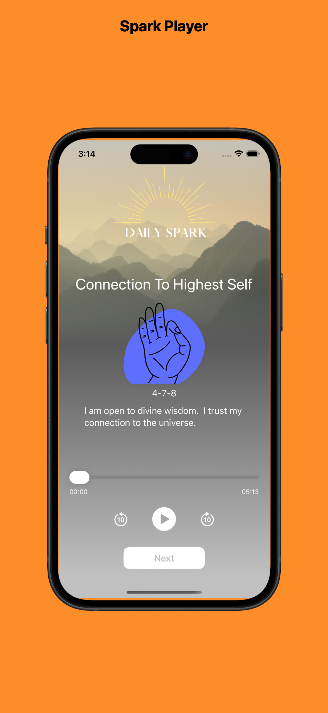
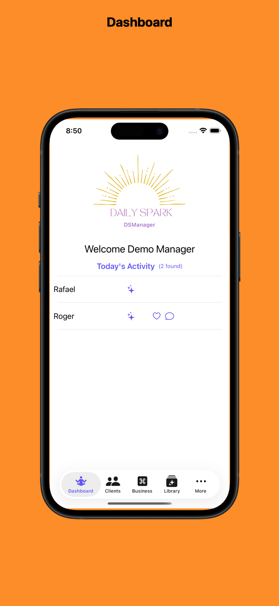
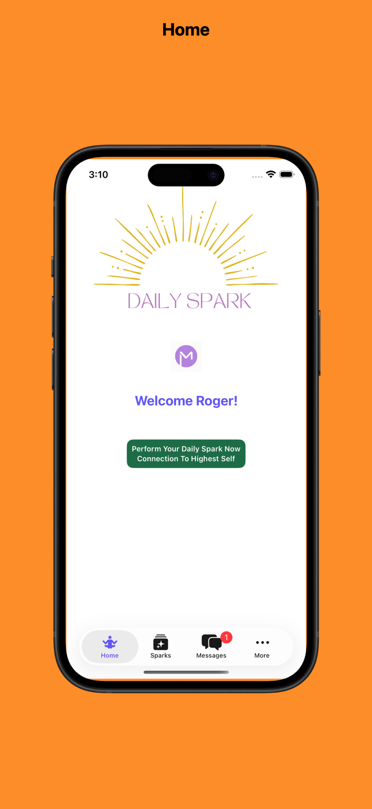
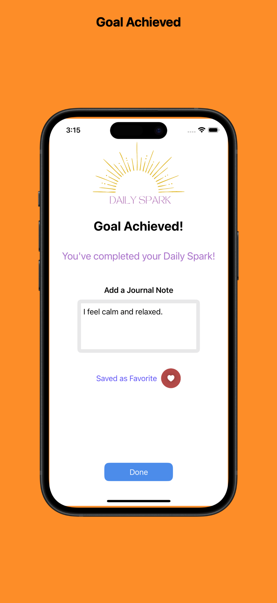
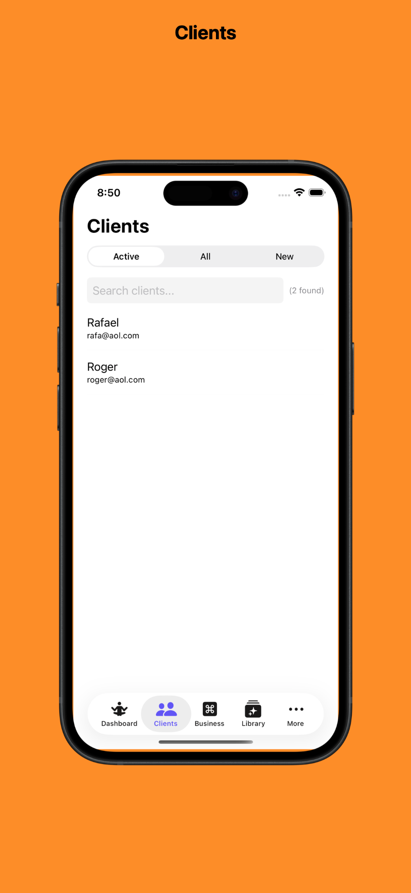
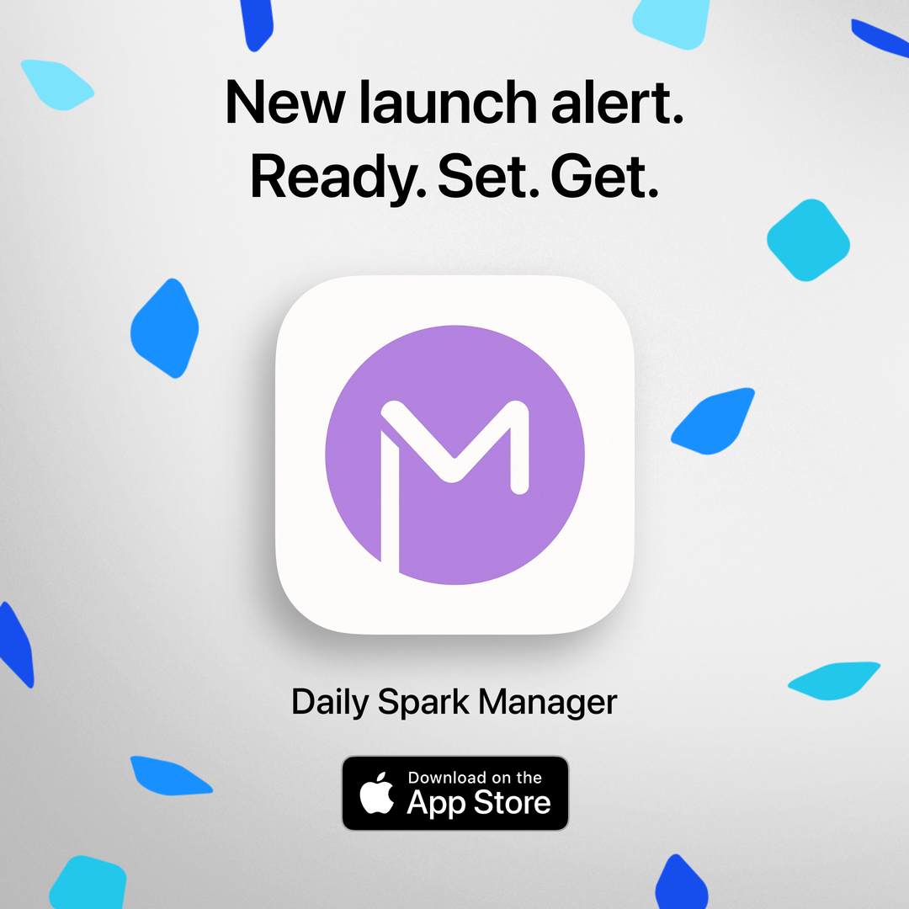
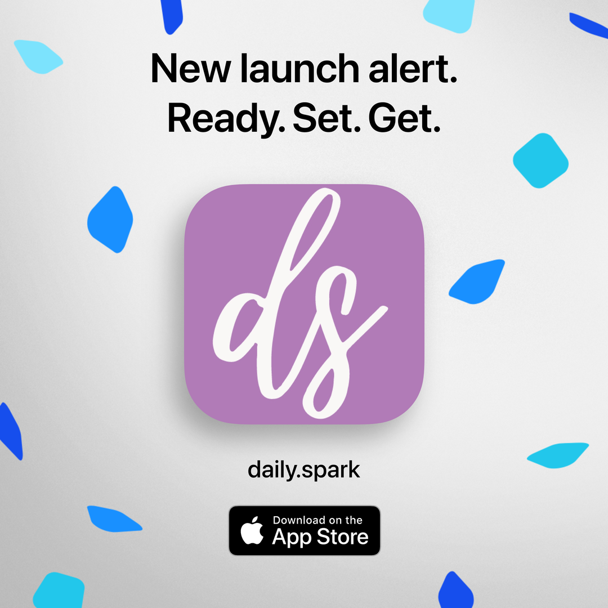

The traditional problem
Verbal homework is often forgotten or misunderstood. Practitioners have zero visibility into client practice, and engagement can drop within 48 hours.
Daily Spark Manager with Daily Spark
Daily Spark is a personalized companion for therapists, coaches, and healers to support clients in cultivating sustainable self-care and intentional growth.


Start here
If you want clients to stay engaged between sessions—and actually follow through—Daily Spark Practice gives you a simple way to assign guided daily practices, track engagement, and stay connected.
Built for practitioners who want stronger client relationships and a more valuable, professional practice.
The vision
Daily Spark Manager extends your care beyond the office, helping clients stay engaged, supported, and consistent between appointments.
Verbal homework is often forgotten or misunderstood. Practitioners have zero visibility into client practice, and engagement can drop within 48 hours.
Structured 21-day paths, real-time activity tracking, and automated daily support keep momentum high on clients’ mobile devices.
What you will experience
Build healthy habits and achieve goals through simple daily routines.
Combine breathwork, affirmations, mudras, and sound frequencies for holistic alignment.
Empower clients with structured support after therapy, coaching, or healing work.
Keep users engaged with guided routines and visual feedback.
Mobile-first experience
Clients receive daily Sparks through a calming mobile flow, while practitioners manage assignments, libraries, progress, and client communication from the manager app.



Practitioner features
Move from a session-based model to a continuous engagement model while scaling your impact.
Revenue & pricing model
Full access for practitioners to manage client lists, track data, and assign protocols.
$89.99/mo Recurring monthly iOS subscriptionMobile app for clients to receive content, practice daily, and track their journey.
$8.99 One-time iOS downloadDownload center

Practitioner app
Manage clients, assign Sparks, and monitor progress between sessions.

Client app
Give clients guided 21-day practices for daily support and consistency.
Implementation guide
Rooted in science, powered by intention
Use the proven 21-day practice cycle to bridge the gap between sessions and support lasting habits.
We received your information and will follow up shortly.